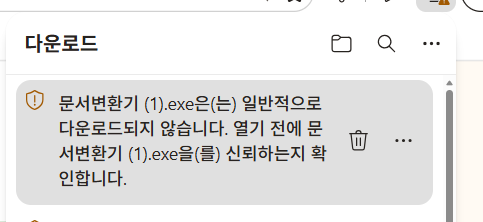
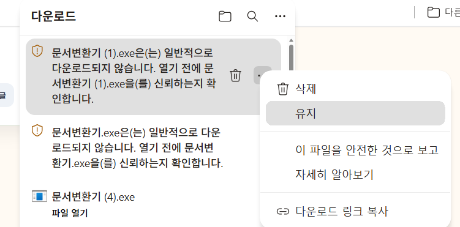
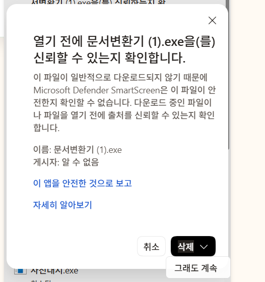

1
다운로드 항목의 점 세 개(⋯)를 누릅니다.
Edge 오른쪽 위 다운로드 목록에서 문서변환기 파일을 찾으세요.

Microsoft Edge에서 다운로드 경고가 보이면 아래 순서대로 진행해 주세요.
Edge 오른쪽 위 다운로드 목록에서 문서변환기 파일을 찾으세요.

파일을 유지할지 확인하는 창이 이어서 나타날 수 있습니다.

확인 창 오른쪽 아래에 있는 메뉴에서 ‘그래도 계속’을 누르면 다운로드가 이어집니다.
